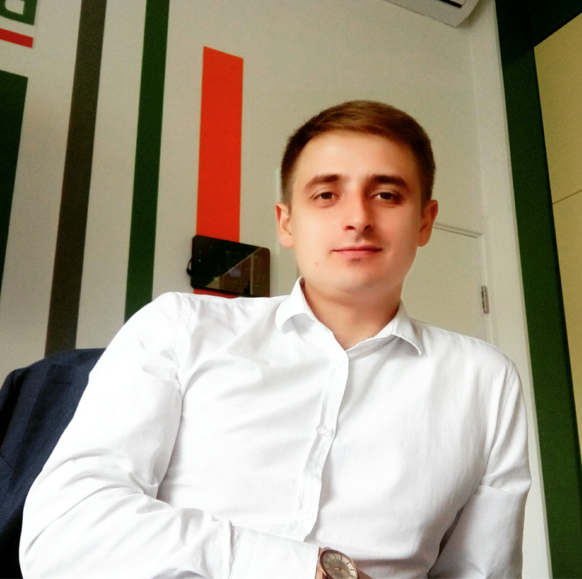
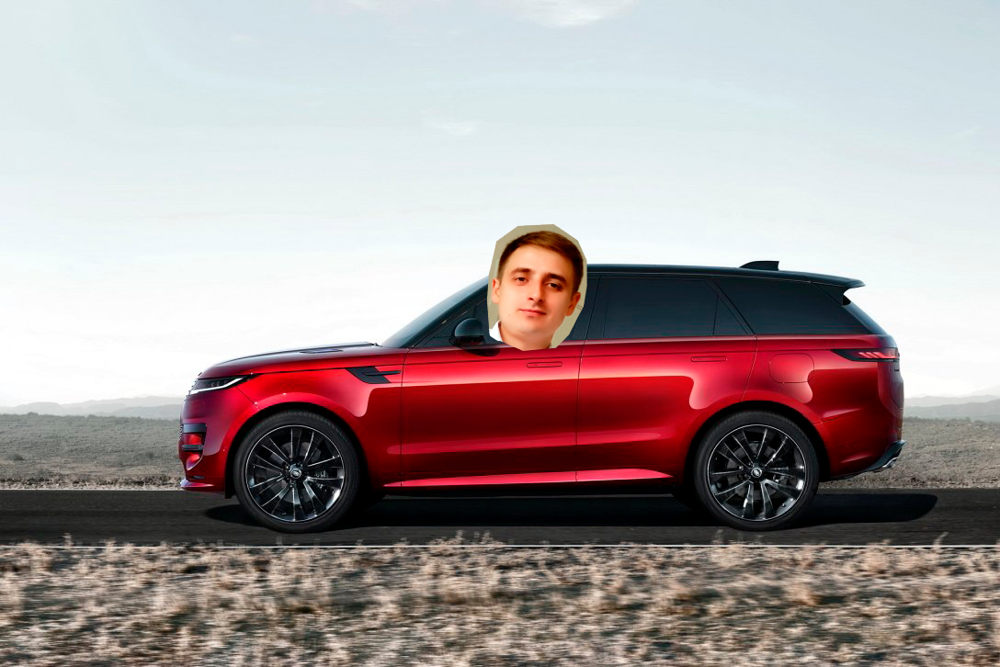
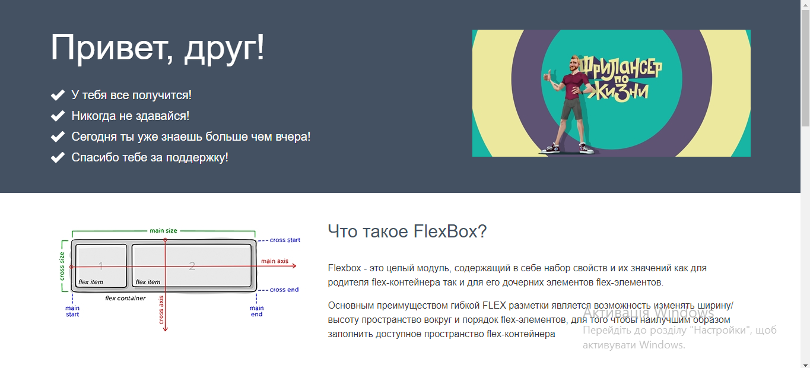
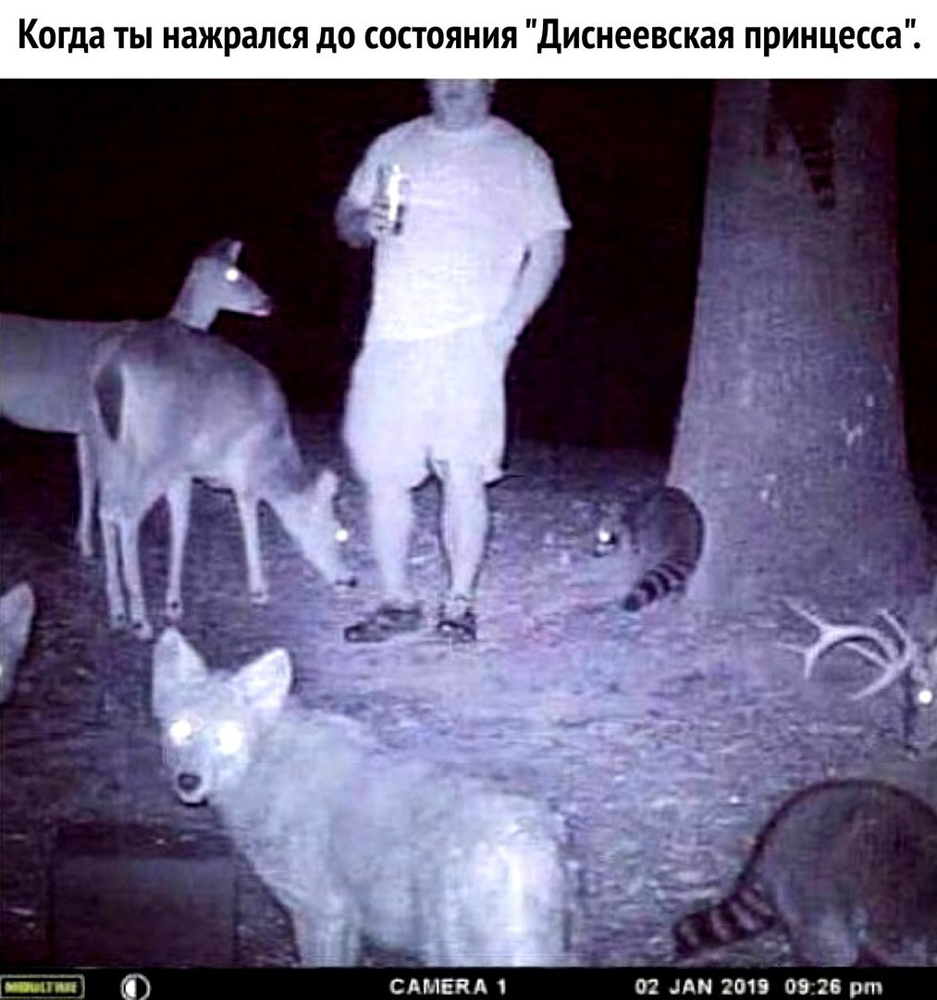

Жив був Я

Так, так... Ви все правильно зрозуміли. Ця коротка історія про мене... Хоча ні, не так - ця коротка історія
про
моє рішення змінити своє життя. Я виграв мільйон, хотів би написати я, але ні. Я виграв щось
набагато
краще, цікавіше та неймовірне, якщо замислитись. Я виграв квиток до нового життя. А де була
лотерея,
запитаєте ви? В голові, серці та... фігня то всьо! Вона була у єдиному погляді, одному, незабутньому,
погляду
чоловіка, який дивився на мене зі свого Range Rover. Погляд айтішика.
Привіт. Мене звати Андрій і мені 34 роки. Якого біса я тут роблю? Ха. Я навчаюсь жити та робити те, що в
першу
чергу хочу, а не те що треба чи модно.
Складний вибір або смачні чебуреки
Ви коли небудь смакували чебуреки на узбіччі траси Одеса - Київ? А скільки разів ви дозволяли себе просто зірватися та дозволити бути вільними та поїсти тих клятів чебуреків за 200 км від дому? Або поїхати за смачним баношом у ресторан Аркан у Шешорах? Або стрибнути з парашютом? Ну ладно, останнє не входить до мого списку бажань. А до ваших? Що ви уявляєте, коли думаєте про свободу?
- Піти на роботу
- Купити пива у п'ятницу
- Зустріти тещу на вокзалі:
- тітку
- брата
- двоюрідкну сусідку подружки мами по лінії дідуся...не твого
- Пережити ще один день
Ваш список бажань? Так. А якщо я скажу, що я думав так само? Що я робив теж саме, що і ви, але в один день
вирішив
змінити все? Не повірете? Добре, але хоча б уявіть!
Ми кожного дня робимо якийсь вибір:
важкий,
легкий, потрібний, а чи робимо всій вибір?
Мужик з авто
В мене є знайома. Гарна, висока, заможня, від неї смачно пахне, впевнений, що на смак як сахарок. І от одного дня вона приїздить на Range Rover. Тупо здоровена тачка с худим хлопцем за кермом. Така собі картина: Папа дав покататися. Але ж ні... Ну ні. Він програмист. Не звичайний, крутий, з досвідом, якийсь там архітектор, має 3 роботи та грає у пін-понг. І я закохався. Не в нього, він просто не пропонував, а в можливості, які дає його работа.
Давайте так. Я 5 років працюю з квітами, 4 роки в працював у туризмі і все, що я могу собі дозволити масштабне, то крутий стіл для пін-понгу та поїздку до Тайланду раз на рік. Правда цей рік ще не настав. Я сів, подумав і вірішив: Треба щось змінювати!
Труднощі вибору, коли ти старий
Так! І ще півроку тому я був впевнений, що я вже давно сформована людина, яка все бачила в своєму житті і єдине, що мені залишається - це тупо розвиватися там, де працюю. Ну всім же казали, що головне стабільна робота, відпустка раз на рік та потримане авто у кредит. Але давайте подивимось на це з іншої сторони. Що ви втрачаєте, якщо оберете шлях змін? Та, бляха, НІЧОГО! А що ви отримаєте?
- Новий досвід
- Нову професію
- Нові можливості
- Нові знайомства
- Погляд, як у мужина у Range Rover
Ви скажете, що це все можна отримати не змінивши роботи та звичного образу життя. Так і можливо ви будете праві, але можете точно та без вагань сказати, що ви ЩАСЛИВІ? Я вам відповім. Ні. Знаєте чому? Та тому що ви це читаєте, а одже вже вирішили щось змінити, десь всередині ви вже відчуваєте, що вам потрібні зміни, так, це може бути колики, але скоріш за все ви просто втомилися від звичного і вам потрібні зміни. То чого чекати?
Чи страшно мені?
Та до усірачки я боюся щось міняти і виходити з зони комфорту. Я, як і ви, яким 30+ вважав, що все моє життя має йти за сценарієм... Допоки я не спробував. Я вся просто безкоштовні курси по фронтенду на каналі Фрилансер по життю та просто спробував, а чи сподобається мені. І знаєте що? Не сподобалось. Це був жах. Я нічого не розумів, я не хотів розуміти, мені здавалось, то не моє, бо я себе бачив ну може трошки простіше. Займався квітами, а тут код пише, може одразу в фізікі-ядерщікі. Вумний надто. І знаєте коли настав перший момент натхнення... Коли я побачив це:
Результат моєї роботи. Це щось незрозуміле та дивне... Але як це круто відчувати, що те що робиш не просто дає результат, а надихає...
Женя?! Де ти був раніше?
Не буває раніше чи пізніше! Все трапляється вчасно. Навіть, якщо тобі 40, 50, 60 років це не означає, що все вже втрачено. Ні, все тільки починається. Моїй мамі 60 років, вона все життя працювала у банку та виховувала дітей, а зараз вона варить мило. І такі круті та гарні вироби... Це неймовірно! А неймовірніше те, що вона постійно розвивається та робить все крутіші та крутіші штуки. Всі блоки, все це в голові, якщо це не блочні елементи. Не нехтуй можливостями та бажаннями! Живи сьогодні, життя одне, другого шансу не дадуть!
Не хочу писати висновки. Ви і самі їх зробити саме такими, як треба. Просто скажу: Живіть!